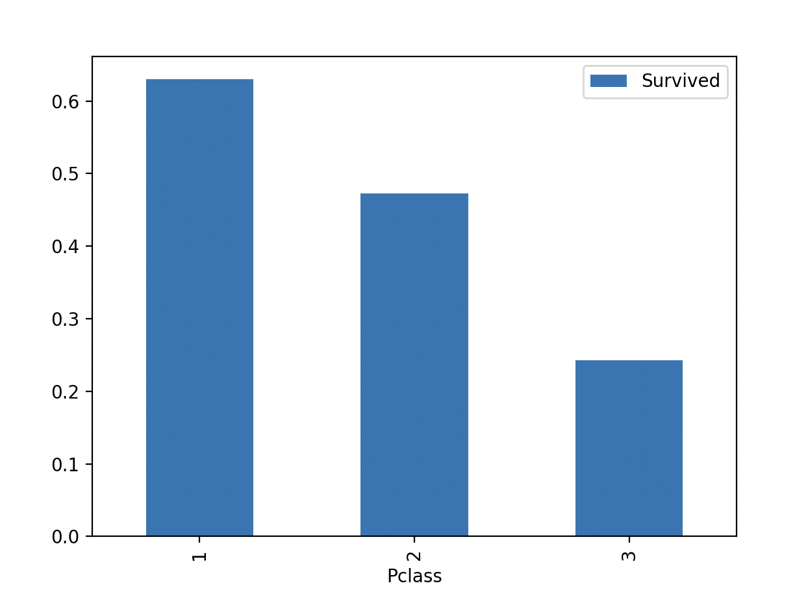

Exploring Titanic Dataset with Pandas
1. Import the Required Libraries
You should import Pandas (import pandas as pd) and Matplotlib (import matplotlib.pyplot as plt) for data manipulation and visualization.
- Python command
import pandas as pd
import matplotlib.pyplot as plt
- Output command
Python 3.11.4 (main, Jul 5 2023, 08:54:11) [Clang 14.0.6 ] on darwin
Type "help", "copyright", "credits" or "license" for more information.
To import package, we use import command. In this case, we need to import pandas and matplotlib.
2. Load the Dataset
Load the Titanic dataset from a CSV file named 'titanic.csv' into a Pandas DataFrame.
- Python command
df = pd.read_csv('titanic.csv')
print(df)
- Output command
PassengerId Survived Pclass Name Sex Age SibSp Parch Ticket Fare Cabin Embarked
0 1 0 3 Braund, Mr. Owen Harris male 22.0 1 0 A/5 21171 7.2500 NaN S
1 2 1 1 Cumings, Mrs. John Bradley (Florence Briggs Th... female 38.0 1 0 PC 17599 71.2833 C85 C
2 3 1 3 Heikkinen, Miss. Laina female 26.0 0 0 STON/O2. 3101282 7.9250 NaN S
3 4 1 1 Futrelle, Mrs. Jacques Heath (Lily May Peel) female 35.0 1 0 113803 53.1000 C123 S
4 5 0 3 Allen, Mr. William Henry male 35.0 0 0 373450 8.0500 NaN S
.. ... ... ... ... ... ... ... ... ... ... ... ...
886 887 0 2 Montvila, Rev. Juozas male 27.0 0 0 211536 13.0000 NaN S
887 888 1 1 Graham, Miss. Margaret Edith female 19.0 0 0 112053 30.0000 B42 S
888 889 0 3 Johnston, Miss. Catherine Helen "Carrie" female NaN 1 2 W./C. 6607 23.4500 NaN S
889 890 1 1 Behr, Mr. Karl Howell male 26.0 0 0 111369 30.0000 C148 C
890 891 0 3 Dooley, Mr. Patrick male 32.0 0 0 370376 7.7500 NaN Q
To load the dataset, we have to load the csv file into the Pandas DataFrame and write the print command.
3. Data Exploration
Display the first few rows of the dataset to understand its structure.
- Python command
df.head()
- Command output
PassengerId Survived Pclass Name Sex Age SibSp Parch Ticket Fare Cabin Embarked
0 1 0 3 Braund, Mr. Owen Harris male 22.0 1 0 A/5 21171 7.2500 NaN S
1 2 1 1 Cumings, Mrs. John Bradley (Florence Briggs Th... female 38.0 1 0 PC 17599 71.2833 C85 C
2 3 1 3 Heikkinen, Miss. Laina female 26.0 0 0 STON/O2. 3101282 7.9250 NaN S
3 4 1 1 Futrelle, Mrs. Jacques Heath (Lily May Peel) female 35.0 1 0 113803 53.1000 C123 S
4 5 0 3 Allen, Mr. William Henry male 35.0 0 0 373450 8.0500 NaN S
Use the head function to display the first five rows of the dataframe.
Print information about the columns and their data types.
- Python command
df.info()
- Command output
<class 'pandas.core.frame.DataFrame'>
RangeIndex: 891 entries, 0 to 890
Data columns (total 12 columns):
# Column Non-Null Count Dtype
--- ------ -------------- -----
0 PassengerId 891 non-null int64
1 Survived 891 non-null int64
2 Pclass 891 non-null int64
3 Name 891 non-null object
4 Sex 891 non-null object
5 Age 714 non-null float64
6 SibSp 891 non-null int64
7 Parch 891 non-null int64
8 Ticket 891 non-null object
9 Fare 891 non-null float64
10 Cabin 204 non-null object
11 Embarked 889 non-null object
dtypes: float64(2), int64(5), object(5)
To print the information about the data, use the info() command. The data contains the number of columns, column labels, column data types, memory usage, range index, and the number of cells in each column.
Show summary statistics for numerical columns (e.g., mean, min, max, etc.).
- Python command
df.describe()
- Command output
PassengerId Survived Pclass Age SibSp Parch Fare
count 891.000000 891.000000 891.000000 714.000000 891.000000 891.000000 891.000000
mean 446.000000 0.383838 2.308642 29.699118 0.523008 0.381594 32.204208
std 257.353842 0.486592 0.836071 14.526497 1.102743 0.806057 49.693429
min 1.000000 0.000000 1.000000 0.420000 0.000000 0.000000 0.000000
25% 223.500000 0.000000 2.000000 20.125000 0.000000 0.000000 7.910400
50% 446.000000 0.000000 3.000000 28.000000 0.000000 0.000000 14.454200
75% 668.500000 1.000000 3.000000 38.000000 1.000000 0.000000 31.000000
max 891.000000 1.000000 3.000000 80.000000 8.000000 6.000000 512.329200
To get the summary of statistics such as the mean, STD, max, min, etc. we use the describe() command.
4. Data Cleaning
Identify and handle missing values in the dataset (e.g., fill missing age values with median).
- Python command
df.isnull()
- Command output
PassengerId Survived Pclass Name Sex Age SibSp Parch Ticket Fare Cabin Embarked
0 False False False False False False False False False False True False
1 False False False False False False False False False False False False
2 False False False False False False False False False False True False
3 False False False False False False False False False False False False
4 False False False False False False False False False False True False
.. ... ... ... ... ... ... ... ... ... ... ... ...
886 False False False False False False False False False False True False
887 False False False False False False False False False False False False
888 False False False False False True False False False False True False
889 False False False False False False False False False False False False
890 False False False False False False False False False False True False
To show the missing values in the data set, use the isnull() command. The output shows that the Age, Cabin and Embarked columns have some missing data.
- Python command
df.fillna(df.mean(numeric_only=True).round(1), inplace=True)
df.fillna(df.median(numeric_only=True).round(1), inplace=True)
print(df)
- Command outcome
PassengerId Survived Pclass Name Sex Age SibSp Parch Ticket Fare Cabin Embarked
0 1 0 3 Braund, Mr. Owen Harris male 22.0 1 0 A/5 21171 7.2500 NaN S
1 2 1 1 Cumings, Mrs. John Bradley (Florence Briggs Th... female 38.0 1 0 PC 17599 71.2833 C85 C
2 3 1 3 Heikkinen, Miss. Laina female 26.0 0 0 STON/O2. 3101282 7.9250 C85 S
3 4 1 1 Futrelle, Mrs. Jacques Heath (Lily May Peel) female 35.0 1 0 113803 53.1000 C123 S
4 5 0 3 Allen, Mr. William Henry male 35.0 0 0 373450 8.0500 C123 S
.. ... ... ... ... ... ... ... ... ... ... ... ...
886 887 0 2 Montvila, Rev. Juozas male 27.0 0 0 211536 13.0000 C50 S
887 888 1 1 Graham, Miss. Margaret Edith female 19.0 0 0 112053 30.0000 B42 S
888 889 0 3 Johnston, Miss. Catherine Helen "Carrie" female 19.0 1 2 W./C. 6607 23.4500 B42 S
889 890 1 1 Behr, Mr. Karl Howell male 26.0 0 0 111369 30.0000 C148 C
890 891 0 3 Dooley, Mr. Patrick male 32.0 0 0 370376 7.7500 C148 Q
Use the fillna() command to fill in the missing values. There is still one missing data in the Cabin column.
Perform any necessary data transformations or cleaning steps.
- Python command
df.dropna()
- Command outcome
PassengerId Survived Pclass Name Sex Age SibSp Parch Ticket Fare Cabin Embarked
1 2 1 1 Cumings, Mrs. John Bradley (Florence Briggs Th... female 38.0 1 0 PC 17599 71.2833 C85 C
2 3 1 3 Heikkinen, Miss. Laina female 26.0 0 0 STON/O2. 3101282 7.9250 C85 S
3 4 1 1 Futrelle, Mrs. Jacques Heath (Lily May Peel) female 35.0 1 0 113803 53.1000 C123 S
4 5 0 3 Allen, Mr. William Henry male 35.0 0 0 373450 8.0500 C123 S
5 6 0 3 Moran, Mr. James male 35.0 0 0 330877 8.4583 C123 Q
.. ... ... ... ... ... ... ... ... ... ... ... ...
886 887 0 2 Montvila, Rev. Juozas male 27.0 0 0 211536 13.0000 C50 S
887 888 1 1 Graham, Miss. Margaret Edith female 19.0 0 0 112053 30.0000 B42 S
888 889 0 3 Johnston, Miss. Catherine Helen "Carrie" female 19.0 1 2 W./C. 6607 23.4500 B42 S
889 890 1 1 Behr, Mr. Karl Howell male 26.0 0 0 111369 30.0000 C148 C
890 891 0 3 Dooley, Mr. Patrick male 32.0 0 0 370376 7.7500 C148 Q
Use the dropna() function to remove data that cannot be filled
5. Data Analysis
Calculate and display the count of passengers by gender.
- Python command
df['Sex'].value_counts()
- Command outcome
male 577
female 314
use value_counts() function to calculate and display the amount of passenger by gender.
Compute the average age of passengers.
- Python command
df['Age'].mean()
- Command outcome
29.581560044893376
Use the mean function to calculate and display the average age of the passenger.
Determine the survival rate by passenger class.
- Python command
df[['Embarked', 'Survived']].groupby('Embarked', as_index=False).mean()
- Command outcome
Pclass Survived
0 1 0.629630
1 2 0.472826
2 3 0.242363
The outcome shows that the passenger who stayed in the class 1 have a higher survival rate compared to those who stayed in class 3.
6. Data Visualization
Create a bar chart to visualize the survival rate by passenger class.
- Python command
df = pd.DataFrame({
'Pclass': ['1', '2', '3'],
'Survived': [0.629630, 0.472826, 0.242363]
})
df.plot(x='Pclass', y='Survived', kind='bar')
plt.show()
- Command outcome

Add appropriate labels and a title to the chart.
7. Conclusion
Summarize your findings or insights gained from analyzing the Titanic dataset.
What I learned from analyzing the data is that the passenger that stayed in the lower class have lower rate of survival. This may be caused by the higher impact that they suffered.
Reflect on the importance of data cleaning and exploration in data analysis.
Data cleaning is important because if there is just one incomplete value in the data, we cannot analyze the data